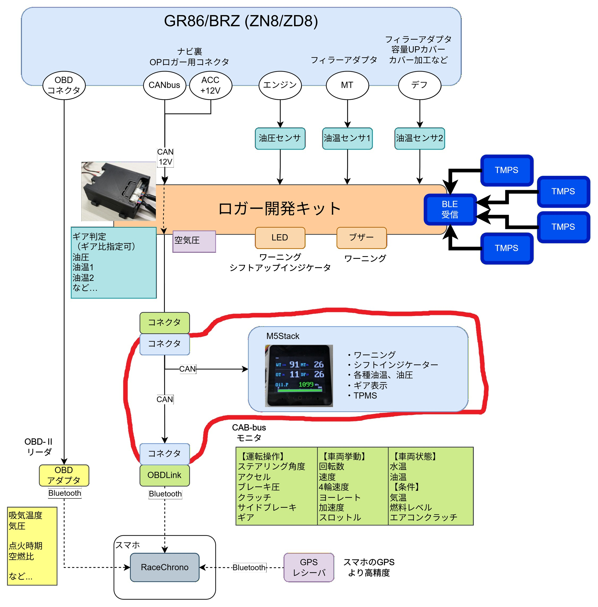

CANMoni は M5Stack CoreS3 で動作する車両用 CAN バス テレメトリーモニターです。
エンジン水温・油温・油圧・ギア・タイヤ空気圧などをリアルタイムで表示し、
しきい値を超えた際に音と画面で警告します。
入力ソースは CAN バス直結 または BLE (Bluetooth LE) の2種類に対応しています。
現在は GR86 / BRZ (ZN8/ZD8) 専用で、車両に接続したロガー開発キットの拡張用モニタとなります。



タップで画面が切り替わります（有効な画面のみ循環）。
大きな数字で表示。油圧は常に緑色。
油圧は緑のまま
温度値は黒文字に
下部に油圧バー。
下部左: 油圧値
下部右: RPM(X) vs 油圧(Y) の散布図
下部左: 油圧値
下部右: アクセル開度(X) vs スロットル開度(Y) の散布図
※ CAN 直結接続専用
| 操作 | 動作 |
|---|---|
| タップ | 次の画面へ切り替え（通常画面） |
| スワイプ 上 / 下 | 音量を調整（左端にバーが表示） |
| スワイプ 左 / 右 | SD カード内の WAV / MP3 を音声に選択 温度表示画面: ワーニング時の警告音 GEAR 画面: シフトアップタイミング音 音声を変更するとデモ音声が流れます |
| ロングプレス (0.65秒) | 受信情報表示画面へ切り替え そのあと画面をタップすると設定メニューへ |
| ボタン | 動作 |
|---|---|
| ○ ボタン 短押し | SD カードにスクリーンショットを保存 |
| ○ ボタン 長押し | 画面を 90° 回転（横向き ↔ 縦向き） |
RPM バー上を 左右にドラッグ すると、Yellow / Red しきい値をリアルタイムで変更できます。 設定は電源を切っても保存されます。
WARN 値（0〜100%）は送信側デバイスから CAN / BLE 経由で受け取ります。
警告音は SD カードに WAV / MP3 ファイルを置くことでカスタム音に変更できます。
画面をロングプレスすると受信情報表示画面に切り替わります。その画面をタップすると設定メニューに入ります。
| メニュー項目 | 内容 |
|---|---|
| Display Items | TEMP2 / TEMP4 / OIL_GRAPH / GEAR / TPMS の表示 ON/OFF を切り替え |
| Input Setting | テレメトリー入力を CAN または BLE から選択し、詳細設定（CAN ID / BLE MAC / XOR キー）を行う |
| FW Update | SD カード経由でファームウェアを更新する（SD に firmware_ota.bin が必要） |
| Reset Settings | すべての設定を工場出荷状態に戻す |
| 操作 | 動作 |
|---|---|
| スワイプ 上 / 下 | 項目を選択 / 値を変更 |
| タップ | 選択中の項目を決定 / ON-OFF 切替 |
| ロングプレス | 前の画面に戻る |
以下はロガー開発キット向けの CAN フレーム ID です。設定メニュー → Input Setting → CAN で変更できます。
ID1〜3 はロガー開発キットが送信する CAN の ID を設定します。ロガー開発キットがデフォルト設定のままであれば変更する必要はありません。
水温・油温・回転数などは自動で車両の CAN 情報を取得します。
| フレーム | 初期値 | 内容 |
|---|---|---|
| ID1 | 0x7FE | OilP / WARN / DT / VBAT |
| ID2 | 0x7FF | ギア / MT |
| ID3 | 0x7FD | タイヤ空気圧 4輪 |
CAN 設定画面の「CAN Monitor」ボタンで CAN バスのパケットをリアルタイム監視できます。
| ファイル | 用途 |
|---|---|
firmware_ota.bin | OTA ファームウェア（更新時に配置） |
***.wav / ***.mp3 | 警告音・シフトアップ音に使用できる音声ファイル。ファイル名は自由。スワイプ左右で選択。 SD カードなし、またはファイルがない場合はデフォルト音で動作。 警告音として繰り返し再生されるため、先頭に無音が無い 1〜2 秒程度の短い音声を推奨。 おすすめ素材サイト： Sound Dictionary 音素材.com |
opening.jpg | 起動時のスプラッシュ画像。ファイルがなければ表示なし。 |
can_monitor_log.csv | CAN モニターのログ（自動生成） |
画面上部の帯は受信状態によって色が変わります。
CAN または BLE の受信がなくなると、該当データの文字が黄色になり、画面上部の帯も黄色になります。
受信途絶が長時間続くと帯が黄色と黒で点滅します。
設定メニュー → Input Setting → CAN の「CAN Monitor」ボタンで起動します。
指定した CAN ID のフレームをリアルタイムで受信・表示し、選択したバイトの値をグラフで確認できます。
この画面で受信したデータは SD カードの can_monitor_log.csv に自動で追記されます。
終了するにはリセットまたは電源の入れ直しが必要です。
| 操作 | 動作 |
|---|---|
| << ボタン | 監視 ID を 1 つ前へ 長押し: 受信履歴のある ID へジャンプ |
| ○ ボタン | 受信ログの凍結 / 解除 |
| >> ボタン | 監視 ID を 1 つ次へ（自動スキャン ON/OFF） 長押し: 受信履歴のある ID へジャンプ |
| グラフをロングタップ | グラフの時間軸を切り替え（10s / 30s / 60s） |
| 凍結中 スワイプ上下 | ログ履歴をスクロール |